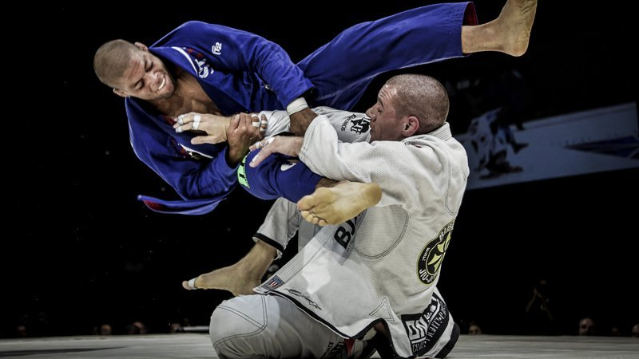

Jiu Jitsu

Jiujitsu, jūjutsu luister, ju-jitsu of jioe-jitsoe kan vertaald worden als "zachte kunst",
of nog correcter als "soepele techniek".
Het is een Japanse zelfverdedigingskunst waarmee men in een paar
seconden een aanvaller kan controleren of uitschakelen.
De beoefenaar ervan heet een jiujitsuka.
Alle vechtsporten zijn in Sittard gelocaliseerd behalve deze.
Jiu Jitsu kan namelijk uitgevoerd worden op deze locatie:Frans van de Laarplein 3, 6217 NH Maastricht.
De eerste 3 weken zijn sowieso gratis, daarna is het eenmalig 20 euro en iedere maand dan 22,50
Als je meer info wilt hebben over deze site moet je op
jiujitsu vereniging klikken